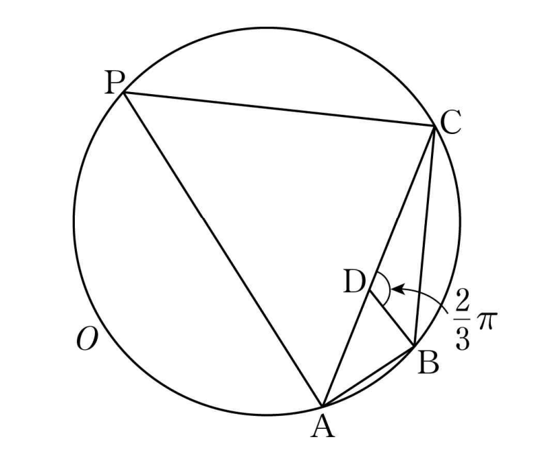

그림과 같이
,
인 삼각형 의 외접원을 라 하자. 원 위의 점 에 대하여 삼각형 의 넓이가 최대가 되도록 하는 점 를 라 할 때, 이다.
선분 위의 점 에 대하여 일 때, 삼각형 의 외접원의 반지름의 길이는? [4점]

① ② ③
④ ⑤
판단길이가 하나도 안 주어졌으니 를 로 두고, 뒤에서 와 이어 줄 를 로 나타내 두자.
각 의 코사인값을 알고 그 양옆 변을 아니까 코사인법칙이야.
판단넓이 최대를 거리로 따지는 대신 원주각을 쓰자. 가 두 호 중 어디 있는지만 정하면 각 가 딱 정해지거든. 가 나 면 삼각형이 안 되니까 경우는 이 둘뿐이야.
(I)은 사각형 가 원에 내접하니까 마주 보는 두 각의 합이 고, (II)는 같은 쪽 호에서 를 보는 원주각이라 각 와 같아.
(I)이든 (II)든 사인값은 같아. 에서 뺀 각의 사인값은 원래 각의 사인값과 같으니까. 그래서 넓이는 만 크게 하면 돼.
가 고정이니까 코사인법칙에 두 변의 제곱의 합이 곱의 두 배 이상이라는 걸 넣으면 의 상한이 한 줄에 나와.
앞 줄의 에 경우마다 코사인값을 넣은 거야. (I)은 빼는 값이 양수라 보다 작아지고, (II)는 음수를 빼니까 커져.
현의 중점은 두 끝점 사이에 있으니 원 안쪽이고, 원 안의 점을 지나는 직선은 원과 꼭 두 번 만나. 호 (I)은 직선 에 대해 와 반대쪽 부분이라 두 교점 중 하나가 거기 있는 거야.
판단(II)의 어떤 점도 (I)에서 인 점의 넓이를 못 넘어. 그래서 넓이가 최대인 점은 (I)의 호에서 , 까지 거리가 같은 점이야.
는 (I)의 호 위에 있으니까 각 의 코사인값은 앞에서 구한 이고, 두 변이 같은 이등변삼각형에서 코사인법칙을 쓰면 돼.
에서 출발해 앞으로 다시 계산하면 ㉢의 길이와 맞는지 볼 수 있어. 은 이등변삼각형 에서 얻은 관계를 뒤집은 거야.
삼각형 에서 각 의 맞은편 변이 라서 사인법칙 한 줄로 반지름이 나와. 점 의 위치는 몰라도 돼.